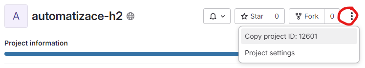
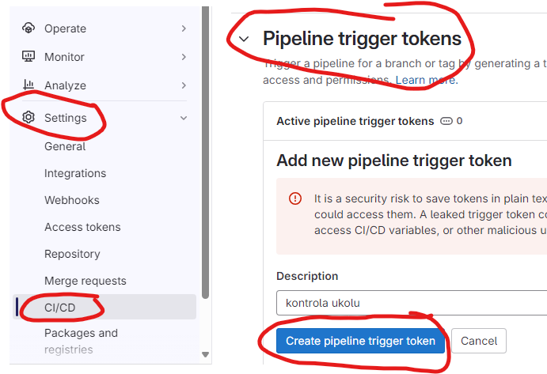
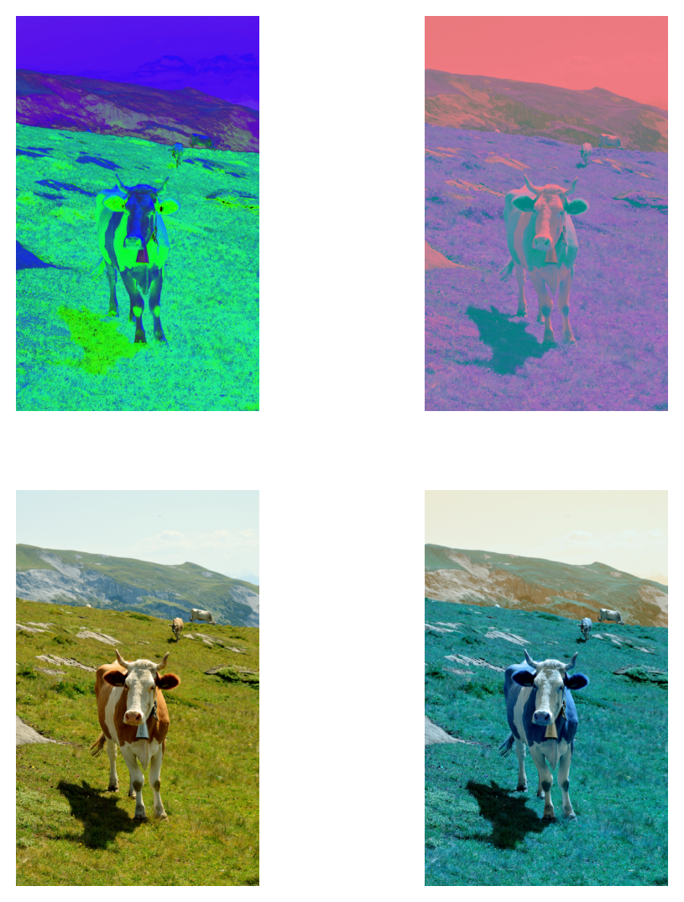
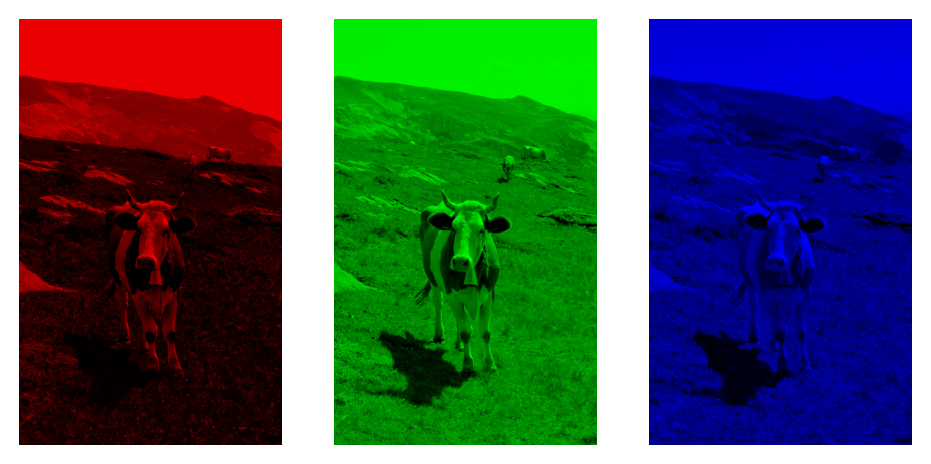
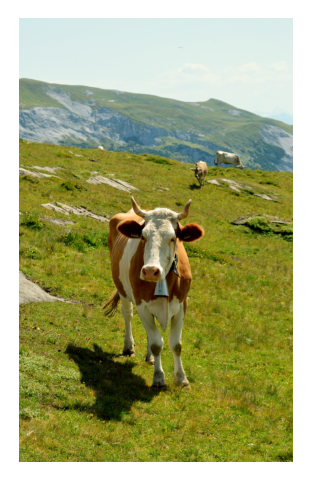
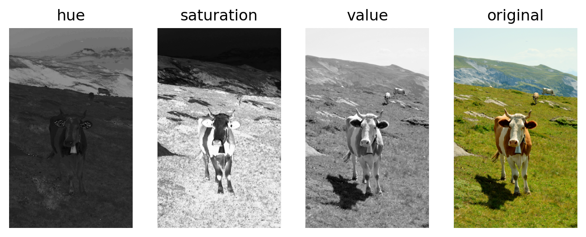
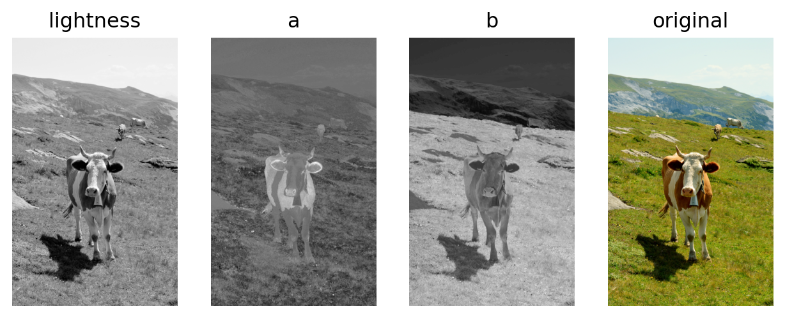
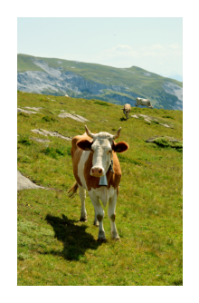
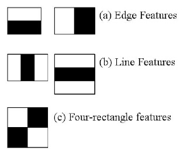
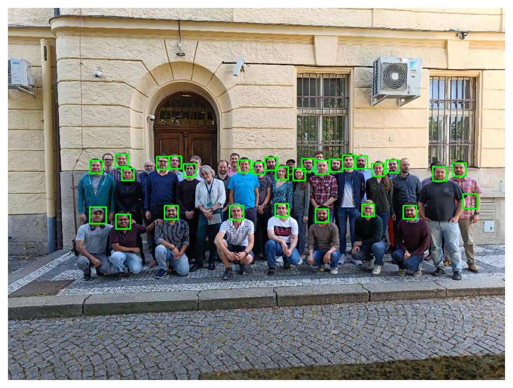

import cv2 as cv
img = cv.imread("thea.jpg")Automatizace ve fyzice: OpenCV podruhé
Připojte se
Domácí úkol č. 1
Discord –> @nfpl242_automatizace –> pište DM
$vsm_measure PROJECT TOKEN [branch]
default branch je master, PROJECT je číslo projektu
- robot provede měření,
- uloží data na server
- vytriggeruje vaší pipeline
- dá mi vědět, že jste úkol odevzdali
 
Detekce objektů
Opakování
- Načíst soubor
. . .
. . .
- Převést do šedé
. . .
gray = cv.cvtColor(img, cv.COLOR_BGR2GRAY). . .
- Rozostřit
. . .
blur = cv.medianBlur(gray, 7). . .
- Práh nebo Hrany
. . .
binary = cv.adaptiveThreshold(blur,255,\
cv.ADAPTIVE_THRESH_GAUSSIAN_C,\
cv.THRESH_BINARY,11,2). . .
- Obrysy
. . .
c, _ = cv.findContours(binary, cv.RETR_LIST, cv.CHAIN_APPROX_SIMPLE)
print(f'{len(c)} contour(s) found!')86928 contour(s) found!Barevné prostory
import matplotlib.pyplot as plt
import numpy as np
plt.figure(figsize=(6,7));
# BGR to HSV
hsv = cv.cvtColor(img, cv.COLOR_BGR2HSV)
plt.subplot(2,2,1); plt.imshow(hsv)
plt.axis('off')
# BGR to L*a*b
lab = cv.cvtColor(img, cv.COLOR_BGR2LAB)
plt.subplot(2,2,2); plt.imshow(lab)
plt.axis('off')
# BGR to RGB
rgb = cv.cvtColor(img, cv.COLOR_BGR2RGB)
plt.subplot(2,2,3); plt.imshow(rgb)
plt.axis('off')
# BGR
plt.subplot(2,2,4); plt.imshow(img)
plt.axis('off')
plt.show()
Jednotlivé složky RGB
blank = np.zeros(img.shape[:2], dtype='uint8')
b,g,r = cv.split(img)
plt.figure(figsize=(6,7));
blue = cv.merge([b,blank,blank])
green = cv.merge([blank,g,blank])
red = cv.merge([blank,blank,r])
plt.subplot(1,3,1);plt.imshow(blue);plt.axis('off')
plt.subplot(1,3,2);plt.imshow(green);plt.axis('off')
plt.subplot(1,3,3);plt.imshow(red);plt.axis('off')
plt.show()
plt.figure(figsize=(4,3));
plt.imshow(rgb)
plt.axis('off')
plt.show()
Jednotlivé složky HSV
- odstín, hue (0 a 360 = červená, 120 = zelená, 240 = modrá).
- sytost (0 - 100)
- jas (0 - 100)
- podobné HSL, což je více pro design
h,s,v = cv.split(hsv)
plt.figure(figsize=(8,7));
plt.subplot(1,4,1); plt.imshow(h, cmap='gray')
plt.title('hue')
plt.axis('off')
plt.subplot(1,4,2); plt.imshow(s, cmap='gray')
plt.title('saturation')
plt.axis('off')
plt.subplot(1,4,3); plt.imshow(v, cmap='gray')
plt.title('value')
plt.axis('off')
plt.subplot(1,4,4); plt.imshow(rgb)
plt.title('original')
plt.axis('off')
plt.show()
Jednotlivé složky Lab
- světelnost (0-100)
- zelená <-> červená (-128 - 127)
- modrá <-> žlutá (-128 - 127)
h,s,v = cv.split(lab)
plt.figure(figsize=(8,7));
plt.subplot(1,4,1); plt.imshow(h, cmap='gray')
plt.title('lightness')
plt.axis('off')
plt.subplot(1,4,2); plt.imshow(s, cmap='gray')
plt.title('a')
plt.axis('off')
plt.subplot(1,4,3); plt.imshow(v, cmap='gray')
plt.title('b')
plt.axis('off')
plt.subplot(1,4,4); plt.imshow(rgb)
plt.title('original')
plt.axis('off')
plt.show()
Histogramy
import matplotlib.pyplot as plt
import numpy as np
plt.figure(figsize=(4,2));
plt.imshow(rgb);plt.axis('off')
plt.show()
. . .
Histogramy
Detekce a kategorizace
Haar cascade
Viola, P. and Jones, M. Rapid object detection using a boosted cascade of simple features. Proceedings of CVPR 2001 (Vol. 1, 2001) doi:10.1109/CVPR.2001.990517
- data se natrénují na setu obrázků s objektem a bez objektu
- obrázek procházen jádrem s nějakým Haarovým rysem
- odečítá se intenzita pod černým - bílým polem
- různé velikosti jader - mnoho rysů obrázku
- rysy promazány a protříděny do etap
- kaskádové - kde nic není, vyhodnotí se to rychle jako prázdno

Detekce obličejů
OpenCV obsahuje předučená data.
people = cv.imread('people.jpg')
people = cv.cvtColor(people, cv.COLOR_BGR2RGB)
gray = cv.cvtColor(people, cv.COLOR_BGR2GRAY)
#gray = cv.equalizeHist(gray)
haar_cascade = cv.CascadeClassifier('haar_face.xml')
faces_rect = haar_cascade.detectMultiScale(
gray, scaleFactor=1.06, minNeighbors=4)
for (x,y,w,h) in faces_rect:
cv.rectangle(people, (x,y), (x+w,y+h),
(0,255,0), thickness=2)
print(f'Nalezeno {len(faces_rect)} obličejů.')
plt.figure(figsize=(8,6));
plt.imshow(people)
plt.axis('off')
plt.show()Nalezeno 29 obličejů.
Vlastní data
- Potřebujeme:
- pozitivních data (kde jsou objekty)
- negativní data (kde nic není)
- Pozitivní lze vygenerovat (např. pro logo, hrot)
opencv_createsamples- alternativně je sw jen upraví
opencv_annotation- naklikáte objekty z obrázku
opencv_traincascade- hlavní nástroj, mnoho parametrů
opencv_visualisation- zobrazí, jaké rysy sleduje a v jakých etapách
Pozor: Tyto nástroje nejsou součástí OpenCV 4, nutno stáhnout starou verzi.
Příští hodina 14.11. odpadá
Cvičení
Detekce obličejů
Úkol - kolik lidí je v KFKL na oddělení?
- Stáhnout cermak.science/teaching/automation/lectures/06-opencv-2/people.jpg
- Pohrát si s barevnými prostory, vyvážení barev
- Použít
haar_cascade.detectMultiScale - Vytvořit docker CI pomocí image
hdgigante/python-opencv:4.10.0-alpine
{kind=link}